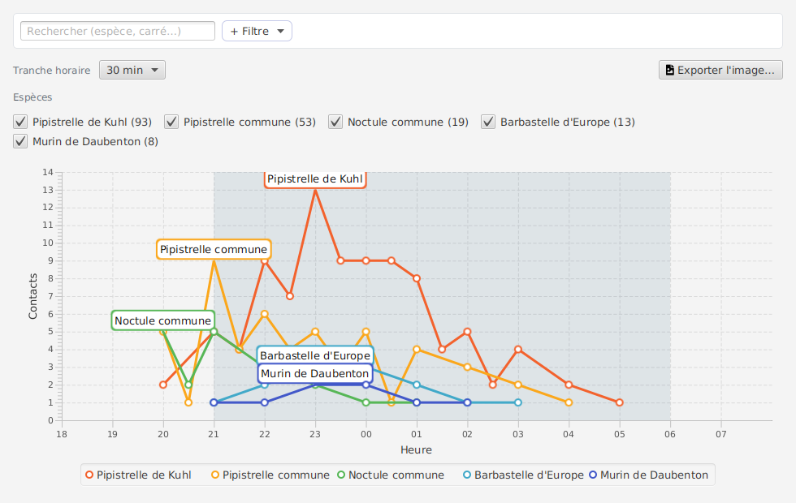
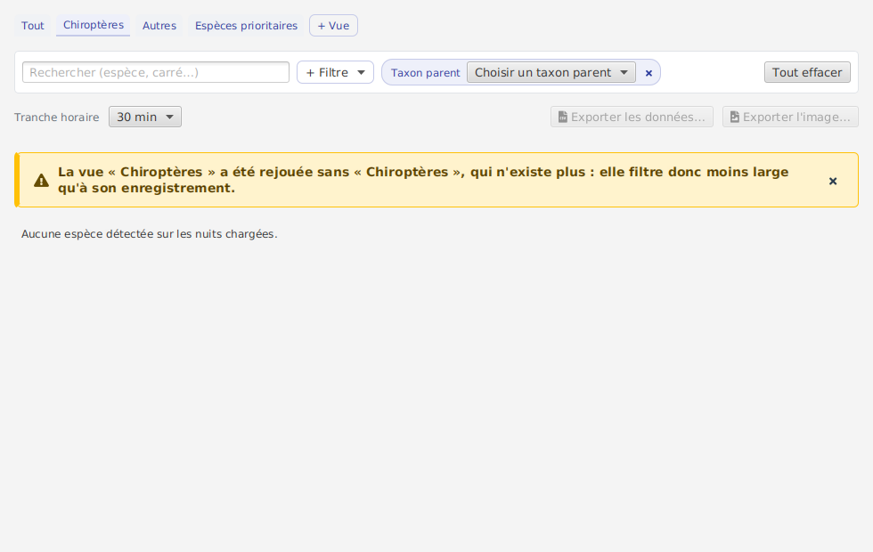
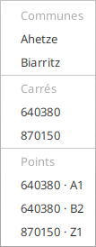
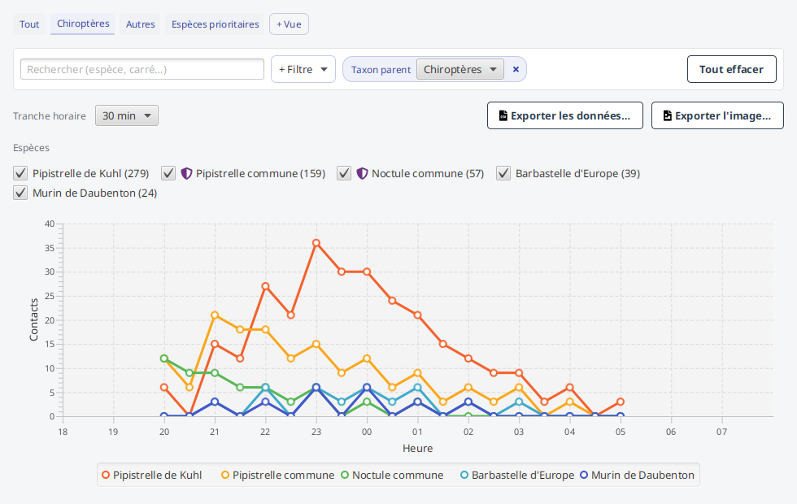
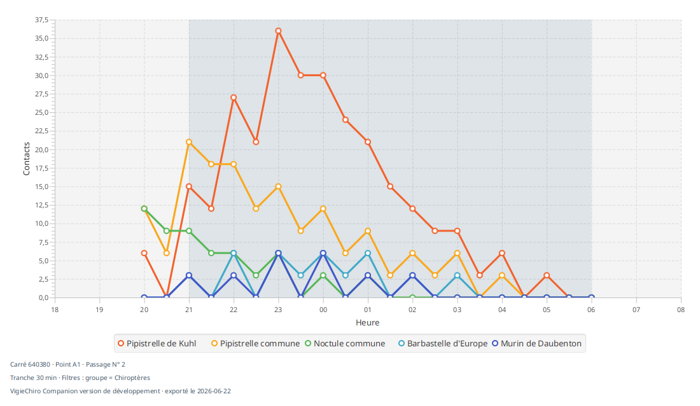
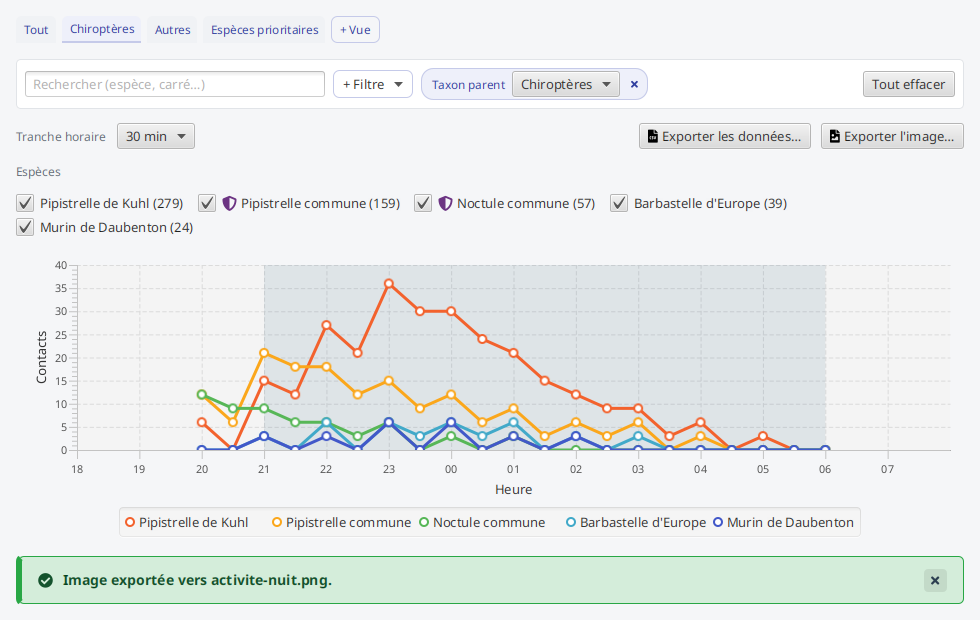

Activité de la nuit¶
L'écran Activité de la nuit trace le nombre de contacts par tranche horaire et par espèce. Là où Espèces & observations répond « combien, et de quoi ? », celui-ci répond « à quelle heure ? ». Il s'ouvre depuis l'écran Passage, pour une nuit, ou depuis l'accueil, sur l'ensemble des nuits.

Une nuit a une forme : montée après le coucher du soleil, pic, décroissance jusqu'à l'aube. Cette forme porte une information que le total efface. Deux nuits à 300 contacts n'ont rien à voir selon que l'activité s'étale sur huit heures ou qu'elle tient en quarante minutes, et l'écart oriente une interprétation autant qu'il signale un problème de capteur.
L'écran réunit :
- une courbe par espèce, sur un axe horaire qui court de 18 h à 8 h : et non de minuit à minuit, qui couperait la nuit en deux ;
- l'aplat de la fenêtre nocturne (du coucher au lever du soleil au point d'écoute) : ce qui en déborde est de l'activité crépusculaire ou diurne ;
- une légende sous le graphe, qui nomme chaque courbe affichée ;
- la largeur de tranche au choix (15, 30 ou 60 minutes) : un pas fin dessine le détail d'un pic, un pas large lisse la forme générale ;
- une case par espèce détectée, avec son total ; les cinq plus contactées sont cochées par défaut, au-delà le graphe devient illisible ;
- une barre de filtres portant 5 critères (lieu, nuit, taxon parent, nature de la nuit, espèces à enjeu) plus la recherche libre : filtrer re-trace ;
Les gestes de la barre (recherche, « + Filtre », puces, « Tout effacer »), la façon dont les listes de valeurs s'adaptent aux autres filtres, et le bandeau qui prévient quand un filtre n'a pas pu être remis en place sont décrits une fois pour tous les écrans dans Personnaliser les tableaux. - des onglets qui séparent les chiroptères du reste : le détecteur ne repère pas que des chauves-souris, et « Autres » réunit orthoptères, micromammifères, oiseaux et le reste du référentiel. Vos propres vues s'enregistrent à côté, avec « + Vue ».
Un bouclier violet devant le nom d'une espèce, dans la liste des cases à cocher, signale une espèce prioritaire au sens du Plan National d'Actions Chiroptères. L'onglet « Espèces prioritaires » ne trace qu'elles : sur une nuit à plusieurs milliers de contacts, il répond d'un clic à « qu'ai-je entendu qui compte ? ».
L'écran s'ouvre sur l'onglet « Chiroptères », la seule catégorie que le protocole vise. Sans cela, les cinq espèces cochées d'office pouvaient comprendre une sauterelle, tracée sur le même graphe et avec la même allure qu'une chauve-souris. Ce n'est pas un filtre imposé : l'onglet actif le dit, et « Tout » est juste à côté.
Les nuits opportunistes¶
Une participation opportuniste est une nuit enregistrée sur le carré de quelqu'un d'autre, quand l'occasion se présente : elle échappe aux règles de calendrier du protocole et ne compte pas dans votre solde de saison.
Ces nuits restent affichées ici : ce que vous avez entendu, vous l'avez entendu. Mais elles ne se comparent pas aux autres, alors le filtre « Nature de la nuit » permet de ne garder que l'une des deux lectures : « Protocole » ou « Opportuniste ». Une nuit sans marquage relève du protocole, qui est le cas courant.
La nuit biologique¶
Une nuit à cheval sur deux dates reste une seule nuit. Le rattachement se fait par bascule à midi : un contact enregistré à 2 h du matin le 22 juin appartient à la nuit du 21. C'est vrai à l'écran comme dans les exports.
Survol d'un point¶
Le survol d'un point donne la valeur exacte que l'axe n'indique qu'approximativement : l'espèce, l'heure de la tranche et le nombre de contacts.
Quand rien ne s'affiche¶
Le message d'absence nomme sa cause, parce qu'un « aucune donnée » ne dit pas quoi faire :
- aucune espèce détectée sur les nuits chargées ;
- aucune espèce ne correspond aux filtres : il faut alors en élargir ou en retirer un ;
- aucune espèce cochée : il suffit d'en cocher une.

Toutes les nuits à la fois¶
Ouvert depuis l'accueil, l'écran couvre tous les passages : la barre de filtres sert alors à restreindre progressivement (un lieu, puis une nuit). L'aplat nocturne disparaît dans cette vue : plusieurs nuits n'ont pas de fenêtre commune, et en afficher une serait trompeur.
La puce « Lieu » propose les communes, les carrés et les points présents dans ce que vous regardez, chacun sous son intitulé. Cocher plusieurs valeurs les cumule : deux carrés cochés montrent les deux. Un point y paraît toujours précédé de son carré (« 640380 · Z1 »), parce qu'un même code de point se retrouve sur presque tous les carrés et ne désignerait rien de précis tout seul.
Un carré nommé porte de même ses deux étiquettes, « 640380 · Bois du bourg » : le numéro et le nom que vous lui avez donné désignent le même lieu, et la liste ne vous fait pas choisir entre deux entrées identiques. Un carré sans nom garde son numéro seul.


Exporter l'image¶
Le bouton Exporter l'image… enregistre la courbe telle qu'elle est affichée, au format PNG. L'image est redessinée pour l'occasion, et non photographiée : elle est donc fidèle même si la fenêtre est réduite ou l'écran masqué.
Elle porte son contexte, inscrit sous le graphe : le carré, le point et le passage (ou « tous les passages »), la largeur de tranche et les filtres actifs, la version de l'application et la date d'export. Sans ces mentions, une courbe collée dans un compte rendu ne dit plus de quelle nuit elle parle.

L'écran dit le résultat de l'export, réussite comme échec : un fichier écrit sans que rien ne l'annonce serait indiscernable d'un clic sans effet.

Pour produire le même contenu en tableau plutôt qu'en image, la ligne de commande expose
exporter-activite (une ligne par espèce et par tranche, ouvrable dans un tableur). Elle accepte les mêmes filtres que l'écran : --lieu (répétable), --nuit, --taxon-parent, --nature et --a-enjeu, pour scripter « l'activité des chiroptères sur Ahetze » sans passer par l'interface.
Avec --a-enjeu, un fichier vide peut vouloir dire deux choses opposées : aucune espèce prioritaire dans ces nuits, ou aucun référentiel chargé. La commande le dit alors explicitement, pour que vous sachiez s'il faut lire le résultat ou réparer l'installation.
Une différence assumée : le point n'y est pas filtrable. Un code de point se retrouve sur presque tous les carrés, et --lieu A1 ne désignerait donc rien de précis. --lieu porte la commune ou le carré, celui-ci par son numéro (--lieu 640380) comme par le nom que vous lui avez donné (--lieu vallon) : c'est le même lieu, et quand la commande refuse une valeur introuvable, elle nomme les carrés présents sous leurs deux étiquettes, telles que l'écran les montre.